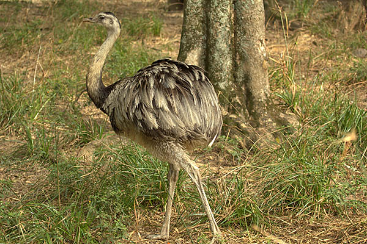
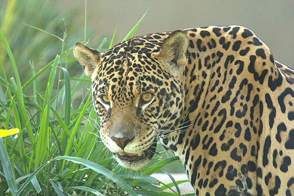

ANIMAIS
AVES

Mutum do sudeste (Crax blumenbachii)
Espécie endêmica da Mata Atlântica de baixada, passa a maior parte do tempo no solo, onde se alimenta de frutos e sementes, e se empoleira para dormir e nidificar. Atualmente é encontrado apenas em 11 localidades em Minas Gerais, Espírito Santo e Bahia, habitando matas primárias ou em avançada regeneração, sendo muito sensível à caça, alteração e fragmentação de seu habitat.

Papagaio de peito roxo (Amazona vinacea)
Caracterizado pela coloração arroxeada do peito, este papagaio habita as florestas frias, principalmente matas de araucárias, formando grandes bandos. Antes encontrada desde a Bahia até o Rio Grande do Sul, hoje restringe-se ao sudeste e sul do Brasil. A destruição de seu habitat preferencial e a captura pelo tráfico são grandes ameaças á sobrevivência da espécie.

Arara vermelha (Ara chloroptera)
No Brasil ocorre desde a Amazônia até o oeste do Piauí, Bahia, Minas Gerais, Mato Grosso do Sul e São Paulo. Mede até 90 cm e pesa até 1,5 kg. Os ovos medem cerca de 5 cm, com incubação feita apenas pelas fêmeas em um período de 29 dias. Ameaçada devido ao desmatamento e principalmente a captura de filhotes para o comércio ilegal.

EMA (Rhea americana)
Maior ave das Américas, podendo chegar até 1,40 m. Ocorre em campos naturais, cerrados e áreas agropecuárias. Machos diferem das fêmeas por possuírem a região anterior do peito e pescoço negra. Alimenta-se de frutos, folhas, sementes, insetos e pequenos animais. Ingere pedras para auxiliar na digestão. Ameaçada de extinção devido principalmente à caça.
Mutum de penacho (Crax fasciolata)
Vive aos pares ou pequenos grupos familiares. Ave ocorrente no sul do Amazonas, Maranhão, e do Brasil central até o oeste de São Paulo, Paraná e Minas Gerais. Em risco de extinção principalmente devido à caça e perda de habitat. Mede cerca de 83 cm e pesa em média 2,5 kg. Macho todo preto com a barriga branca e fêmea com barriga cor de canela. Alimenta-se de frutas, folhas e brotos de plantas.
RÉPTEIS

CÁGADO DE BARBICHA (Phrynops geoffroanus)
É um cágado de carapaça achatada e de coloração tendendo do cinza esverdeada ao preto. A região central do casco é deprimida formando um sulco. O casco é bem achatado e o animal é de grande porte podendo atingir 70 centímetros.

TARTARUGA DE ORELHA VERMELHA (Trachemys s.elegans)
A tartaruga-de-ouvido-vermelho é a subespécie Trachemys scripta elegans, da ordem Testudinata, como é a chamada a ordem dos quelônios. É nativa dos Estados Unidos da América, mas hoje é encontrada em vários lugares do mundo, sendo ilegal como animal de estimação no Brasil, de acordo com o IBAMA.

JABUTI PIRANGA (Chelonoidis carbonaria)
O jabuti-piranga é uma das duas espécies de jabuti conhecidas. Por ser a espécie mais comum dos jabutis, também é chamado abreviadamente como jabuti, jaboti, jabutim, jabuti-vermelho, em nas comunidades rurais do Alto Trombetas em Oriximiná, como curixá.

CÁGADO CABEÇUDO (Mesoclemmys tuberculatas)
O seu nome se da por conta do tamanho avantajado da sua cabeça que garante, quando necessário, uma boa mordida. Os ovos são enterrados em um ninho aberto no solo e apresentam casca dura e lisa, semelhante à do ovo de galinha, apresentando coloração creme.

IGUANA (Iguana iguana)
Iguana-verde, popularmente conhecida como iguana-comum, iguano, sinimbu, "camaleão", cambaleão, senembi, senembu ou tijibu, é uma espécie de réptil da família Iguanidae. Ocorre na América Central, Caribe e América do Sul, abrangendo grande parte do Brasil.
MAMIFEROS

Gato do mato pequeno (Leopardus tigrinus)
O menor felino brasileiro é um animal solitário, de hábito noturno, que habita o solo, mas é capaz de escalar árvores com facilidade, sendo encontrado em todos os biomas do Brasil. A gestação de cerca de 2 meses gera apenas um filhote. Embora possa adaptar-se a áreas modificadas pelo homem, a redução das áreas naturais ameaça a sobrevivência da espécie.

Onça pintada (Panthera onca)
Maior felídeo das Américas, ocorre por todo o Brasil, ocupando florestas densas da Amazônia e Mata Atlântica, áreas de Cerrado e Caatinga e o Pantanal. Necessitam grandes áreas com boa quantidade de presas para viver, sendo a redução de habitat e o isolamento ameaças à espécie. Os conflitos devido a predação e os atropelamentos são também fatores de impacto sobre as populações.

Lobo guará (Chrysocyon brachyurus)
É uma espécie de pernas longas, coloração alaranjada e orelhas grandes, que habita ambientes abertos como campos e cerrados. Ocorre no Brasil central, áreas do sudeste e sul. Alimentam-se de frutos e pequenos vertebrados, sendo injustamente acusados de predação de aves domésticas, o que leva a sua perseguição e abate, o que, aliado a atropelamentos, ameaça a espécie.

Onça parda (Puma concolor)
Segundo maior felídeo das Américas, é encontrada em todos os biomas brasileiros. Animal de hábitos noturnos e terrestres, escala árvores com facilidade. Pode gerar de 2 a 4 filhotes em gestação de cerca de 90 dias. A caça, o desmatamento e fragmentação de áreas naturais, a redução da disponibilidade de presas e os atropelamentos são ameaças à sobrevivência da espécie.
Mutum do sudeste (Crax blumenbachii)
Espécie endêmica da Mata Atlântica de baixada, passa a maior parte do tempo no solo, onde se alimenta de frutos e sementes, e se empoleira para dormir e nidificar. Atualmente é encontrado apenas em 11 localidades em Minas Gerais, Espírito Santo e Bahia, habitando matas primárias ou em avançada regeneração, sendo muito sensível à caça, alteração e fragmentação de seu habitat.
Papagaio de peito roxo (Amazona vinacea) Caracterizado pela coloração arroxeada do peito, este papagaio habita as florestas frias, principalmente matas de araucárias, formando grandes bandos. Antes encontrada desde a Bahia até o Rio Grande do Sul, hoje restringe-se ao sudeste e sul do Brasil. A destruição de seu habitat preferencial e a captura pelo tráfico são grandes ameaças á sobrevivência da espécie.
Arara vermelha (Ara chloroptera)
No Brasil ocorre desde a Amazônia até o oeste do Piauí, Bahia, Minas Gerais, Mato Grosso do Sul e São Paulo. Mede até 90 cm e pesa até 1,5 kg. Os ovos medem cerca de 5 cm, com incubação feita apenas pelas fêmeas em um período de 29 dias. Ameaçada devido ao desmatamento e principalmente a captura de filhotes para o comércio ilegal.
EMA (Rhea americana)
Maior ave das Américas, podendo chegar até 1,40 m. Ocorre em campos naturais, cerrados e áreas agropecuárias. Machos diferem das fêmeas por possuírem a região anterior do peito e pescoço negra. Alimenta-se de frutos, folhas, sementes, insetos e pequenos animais. Ingere pedras para auxiliar na digestão. Ameaçada de extinção devido principalmente à caça.
Mutum de penacho (Crax fasciolata)
Vive aos pares ou pequenos grupos familiares. Ave ocorrente no sul do Amazonas, Maranhão, e do Brasil central até o oeste de São Paulo, Paraná e Minas Gerais. Em risco de extinção principalmente devido à caça e perda de habitat. Mede cerca de 83 cm e pesa em média 2,5 kg. Macho todo preto com a barriga branca e fêmea com barriga cor de canela. Alimenta-se de frutas, folhas e brotos de plantas.
CÁGADO DE BARBICHA (Phrynops geoffroanus)
É um cágado de carapaça achatada e de coloração tendendo do cinza esverdeada ao preto. A região central do casco é deprimida formando um sulco. O casco é bem achatado e o animal é de grande porte podendo atingir 70 centímetros.
TARTARUGA DE ORELHA VERMELHA (Trachemys s.elegans)
A tartaruga-de-ouvido-vermelho é a subespécie Trachemys scripta elegans, da ordem Testudinata, como é a chamada a ordem dos quelônios. É nativa dos Estados Unidos da América, mas hoje é encontrada em vários lugares do mundo, sendo ilegal como animal de estimação no Brasil, de acordo com o IBAMA.
JABUTI PIRANGA (Chelonoidis carbonaria)
O jabuti-piranga é uma das duas espécies de jabuti conhecidas. Por ser a espécie mais comum dos jabutis, também é chamado abreviadamente como jabuti, jaboti, jabutim, jabuti-vermelho, em nas comunidades rurais do Alto Trombetas em Oriximiná, como curixá.
CÁGADO CABEÇUDO (Mesoclemmys tuberculatas)
O seu nome se da por conta do tamanho avantajado da sua cabeça que garante, quando necessário, uma boa mordida. Os ovos são enterrados em um ninho aberto no solo e apresentam casca dura e lisa, semelhante à do ovo de galinha, apresentando coloração creme.
IGUANA (Iguana iguana)
Iguana-verde, popularmente conhecida como iguana-comum, iguano, sinimbu, "camaleão", cambaleão, senembi, senembu ou tijibu, é uma espécie de réptil da família Iguanidae. Ocorre na América Central, Caribe e América do Sul, abrangendo grande parte do Brasil.
Gato do mato pequeno (Leopardus tigrinus)
O menor felino brasileiro é um animal solitário, de hábito noturno, que habita o solo, mas é capaz de escalar árvores com facilidade, sendo encontrado em todos os biomas do Brasil. A gestação de cerca de 2 meses gera apenas um filhote. Embora possa adaptar-se a áreas modificadas pelo homem, a redução das áreas naturais ameaça a sobrevivência da espécie.
Onça pintada (Panthera onca)
Maior felídeo das Américas, ocorre por todo o Brasil, ocupando florestas densas da Amazônia e Mata Atlântica, áreas de Cerrado e Caatinga e o Pantanal. Necessitam grandes áreas com boa quantidade de presas para viver, sendo a redução de habitat e o isolamento ameaças à espécie. Os conflitos devido a predação e os atropelamentos são também fatores de impacto sobre as populações.
Lobo guará (Chrysocyon brachyurus)
É uma espécie de pernas longas, coloração alaranjada e orelhas grandes, que habita ambientes abertos como campos e cerrados. Ocorre no Brasil central, áreas do sudeste e sul. Alimentam-se de frutos e pequenos vertebrados, sendo injustamente acusados de predação de aves domésticas, o que leva a sua perseguição e abate, o que, aliado a atropelamentos, ameaça a espécie.
Onça parda (Puma concolor)
Segundo maior felídeo das Américas, é encontrada em todos os biomas brasileiros. Animal de hábitos noturnos e terrestres, escala árvores com facilidade. Pode gerar de 2 a 4 filhotes em gestação de cerca de 90 dias. A caça, o desmatamento e fragmentação de áreas naturais, a redução da disponibilidade de presas e os atropelamentos são ameaças à sobrevivência da espécie.